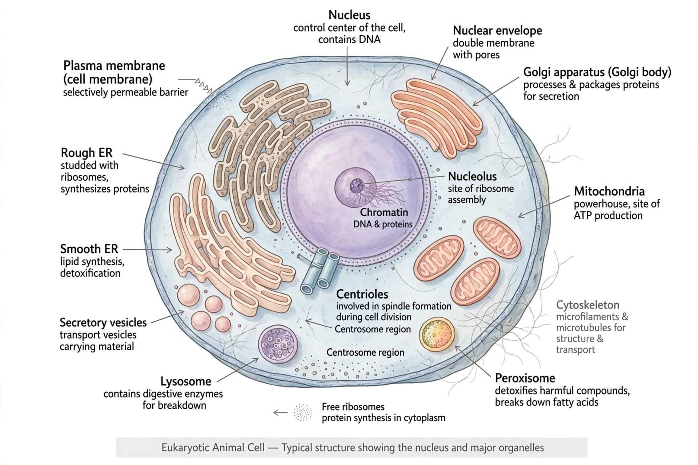

Eukaryote
From Wikipedia, the free encyclopedia
A eukaryote is an organism whose cells contain a membrane-bound nucleus enclosing the genetic material, together with other membrane-bound organelles. Eukaryotes include animals, plants, fungi and the diverse protists; they range from single-celled yeasts to the largest organisms on Earth. The domain name is Eukarya (or Eukaryota).

[Image: Diagram of a typical eukaryotic animal cell]
Characteristics
Eukaryotic cells are typically 10–100 micrometres across — much larger than prokaryotic cells. Their DNA is organised into linear chromosomes wrapped around histone proteins inside the nucleus. Organelles include mitochondria for energy production, the Endoplasmic reticulum and Golgi apparatus for protein and lipid processing, and in photosynthetic lineages chloroplasts. A dynamic Cytoskeleton provides shape, internal transport and movement.
Origin
Eukaryotes are thought to have arisen through endosymbiosis: an archaeal host cell engulfed bacteria that became mitochondria (and, in one lineage, chloroplasts). This is supported by the double membranes and small circular genomes of those organelles. The last eukaryotic common ancestor (LECA) already possessed a nucleus, cytoskeleton and sexual reproduction via Meiosis.
Diversity
Eukaryotes are divided into several supergroups, including Opisthokonta (animals and fungi), Archaeplastida (plants and red/green algae), and the SAR group. Sexual reproduction, multicellularity and complex development evolved within this domain.